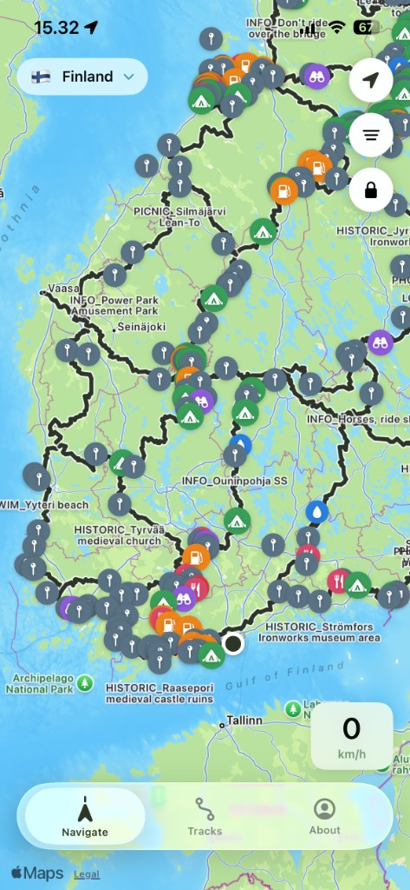

Download Trans Euro Trail tracks
Official country files on the phone. Download them and keep them up to date.
Motorcycle navigation for the Trans Euro Trail, or a GPX of your own. The map lives on the phone.

Official country files on the phone. Download them and keep them up to date.
Import a GPX file and navigate it on the phone.
Save the tiles to the device. They stay there when the signal drops.
One hundred percent free. Nothing to sign in to. The files live on this phone.